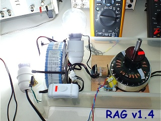

March 11, 2013 - DLE-TEST12 : Here is the test of the RAG v1.4 (Regenerative Acceleration Generator). The RAG v1.4 is a replication of the Thane C. Heins' ReGenX of Potential Difference Inc. Canada. In this test, I have added a 2nd Regen coil, this coil is placed so as to cancel the cogging torque produced by the magnetic attraction between the rotor magnets and the cores of the Regen coils. This cogging torque generates a bad magnetic drag effect which consumes power.
Below the setup used for the TEST-DLE12 :
In this test, there are 2 LED BULBS (High Power LED SMD type, Light House x21 Leds) connected (via two switches) directly to each regen coils.

TESTS RESULTS on the RAG v1.4 :

When the two regen coils are loaded with the 2 SMD LED lit at full power, the turn speed of the RAG increases and the input DC current drops slightly.

Below the video of the tests of the RAG v1.4
Stay tuned,
Email: jnaudin509@aol.com
Documents and references (courtesy of Thane C. Heins CEO of PDI Canada ) :
INFINITE RANGE eBIKE PROJECT TEST #1 (courtesy of Thane C. Heins from PDI canada)
OTTAWA UNIVERSITY BionX ReGenX Electric eBike Test (courtesy of Thane C. Heins from PDI canada)
NEXT TEST